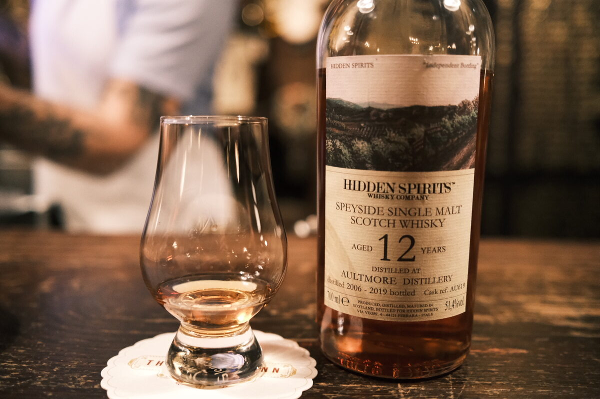

Aultmore 2006 Hidden Spirits 12 years 51.4% (red wine finish)
Finished (for 28 months, I think) in a ex-Bolesna red wine cask (that’s Italy, folks). On that account, I’ll put away my Hawaiian shirts. Cask AU619.
Colour Deep ruby.
Nose Vanilla, pineapple, coconut. Perhaps I should grab those shirts again? Tropical Aultmore per usual. Mangoes and papaya. A hint of wax. A little herbal. Brown sugar. With water, very malty, plums and glacé cherries.
Palate Malty! Creamy mouthfeel, textured milk. Pineapple juice, bananas and mangoes. Alright, here’s the wine. Fruit roll ups, fruit jellies. Berry jams. Spicy. With water, more dried fruits, the tropical character kind of goes. Maltier. Hazelnuts.
Finish Long and warming. Berry jams and clotted cream. Brown sugar. With water, more tropical fruits! Banana sundae. Plums. Hazelnuts.
Comments Cracking stuff. Lovely distillate forward Aultmore, despite the finish. Water has a fun effect. 88/100.

Posted by Dominic on 15 Jun 2021